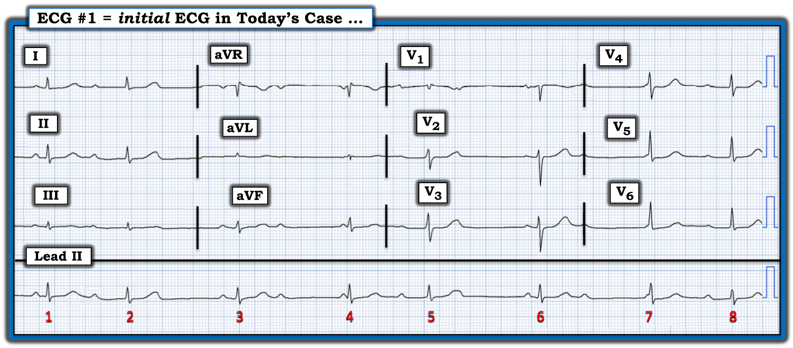
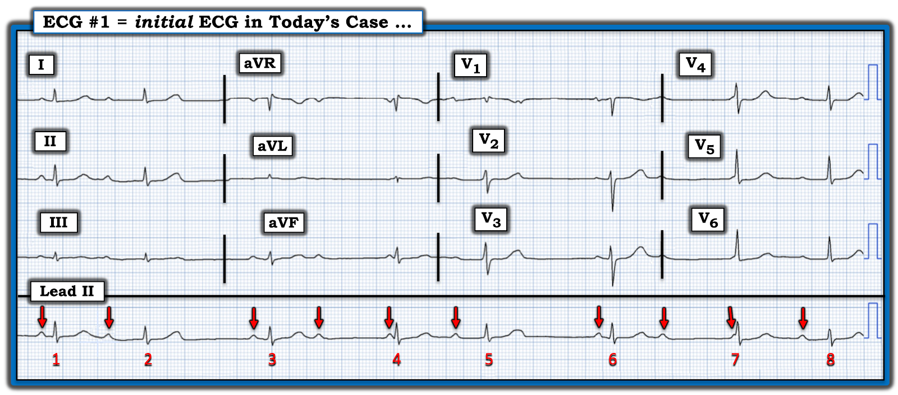
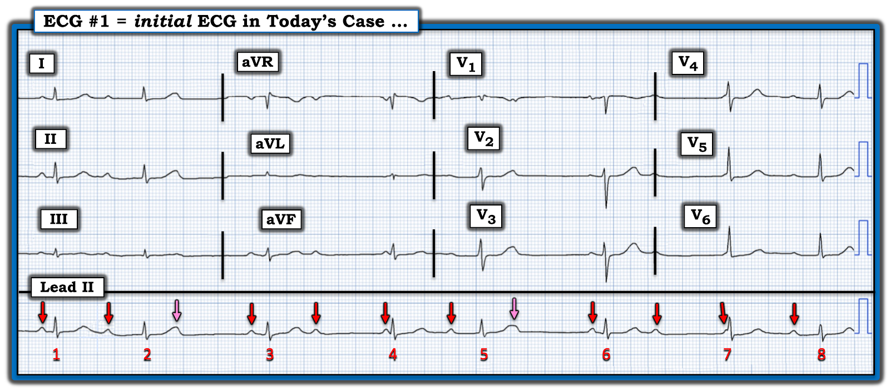
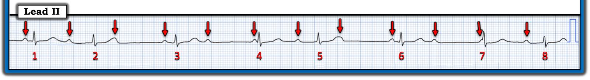
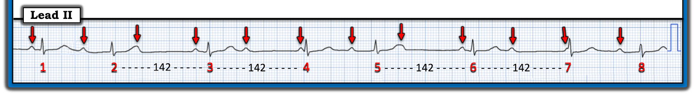
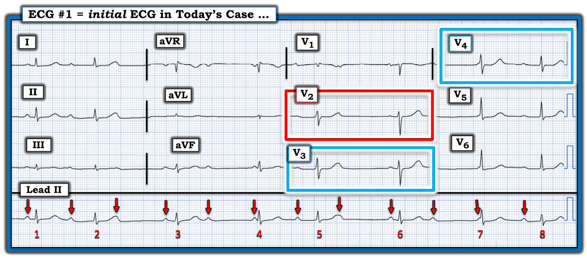
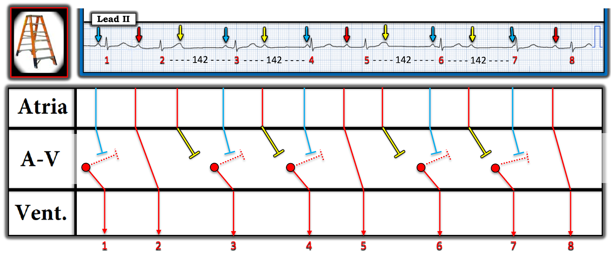
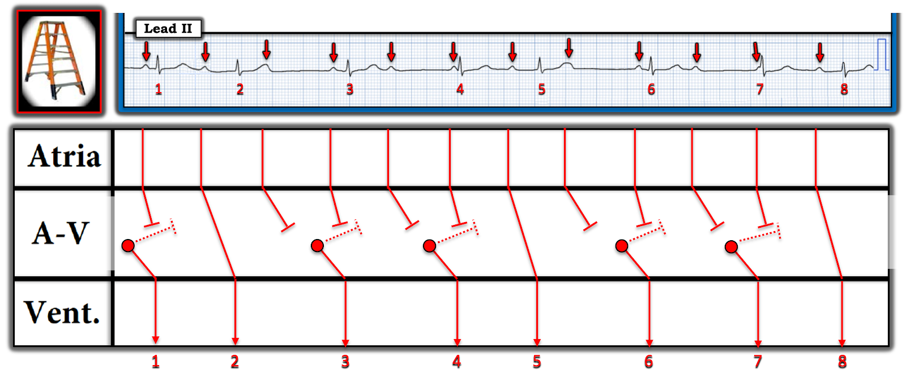

ECG Blog #421 — Có nhồi máu cơ tim gần đây không?
Nếu bạn được yêu cầu đọc điện tâm đồ ở Hình 1 thì sao?
- BẠN sẽ đọc nhịp này như thế nào?
- Ngay cả khi không có chút bệnh sử nào — Có nhồi máu cơ tim gần đây hay không?


Cách tiếp cận CỦA TÔI với bản ghi hôm nay:
Như thường lệ — tôi thích bắt đầu đánh giá bằng một cái nhìn nhanh vào các dải nhịp chuyển đạo dài ở phía dưới bản ghi. Theo Cách tiếp cận Ps, Qs, 3R (mà tôi đã ôn lại trong ECG Blog #185):
- Có nhiều sóng P — thấy rõ trên dải nhịp chuyển đạo II dài.
- Phức bộ QRS hẹp ở cả 12 chuyển đạo.
- Nhịp không đều (Regular). Tần số (Rate) thất thay đổi.
- Thông số thứ 5 của Cách tiếp cận Ps,Qs,3R — là chữ R thứ 3, gợi nhớ “Liên quan (Related)” — tức là xác định xem sóng P có (hay không) liên quan với các phức bộ QRS kế cận. Thông số cuối cùng này đánh giá tốt nhất bằng cách đánh dấu các sóng P trên dải nhịp chuyển đạo II dài.
CÂU HỎI:
Hãy NHÌN vào Hình 2 — trong đó các mũi tên ĐỎ đánh dấu những sóng P chắc chắn thấy được trên bản ghi này.
- BẠN sẽ mô tả tính đều (hoặc không đều) của sóng P trong nhịp hôm nay như thế nào?
- Có phải tất cả các sóng P đều xuất phát từ nút SA không?


TRẢ LỜI:
Chúng ta thấy ở Hình 2 — rằng mỗi sóng P có mũi tên ĐỎ đều có hình dạng sóng P giống nhau và bình thường — và mỗi sóng P này đều dương trên dải nhịp chuyển đạo II dài. Do đó có thể cho rằng đây là các sóng P xoang bình thường.
- Ngoại trừ 2 chỗ trên dải nhịp mà chúng ta không thấy sóng P ở vị trí lẽ ra hợp lý phải có — Chẳng phải các sóng P có mũi tên ĐỎ mà chúng ta đã đánh dấu ở Hình 2 nhìn chung khá đều hay sao?
- LƯU Ý: Nếu đo bằng compa đo (calipers) — chúng ta biết rằng các sóng P có mũi tên ĐỎ ở Hình 2 không đều hoàn toàn chính xác. Nhưng điều chúng ta đang cố xác định là liệu có một cơ chế xoang nền hay không. Điều này bao gồm cả loạn nhịp xoang — trong đó khoảng P-P thường dao động nhẹ. Sự dao động nhẹ về tính đều của sóng P xoang này có xu hướng lớn hơn khi có blốc AV độ 2 hoặc độ 3 (gọi là loạn nhịp xoang theo pha thất (ventriculophasic sinus arrhythmia) — như đã minh họa trong ECG Blog #344).
ĐIỂM THEN CHỐT (PEARL) #1: Khi nhiều (phần lớn) sóng P trên một bản ghi trông đều (hoặc ít nhất là khá đều) — nhưng có một hai chỗ trong nhịp mà sóng P không xuất hiện ở vị trí bạn chờ đợi — thì có thể có thêm các sóng P khác đang “ẩn nấp”. Vì vậy — tôi xem xét đặc biệt kỹ các phức bộ QRS và sóng ST-T có thể đang che một phần (hoặc toàn bộ) các sóng P bị thiếu.
- Có dấu hiệu nào ở Hình 2 — cho thấy có thể có nhiều sóng P hơn số sóng chúng ta đã đánh dấu bằng mũi tên ĐỎ hay không?
- GỢI Ý: Câu trả lời của tôi được trình bày ở Hình 3.


ĐIỂM THEN CHỐT (PEARL) #2: Nhận ra một dấu hiệu trên điện tâm đồ sẽ dễ hơn rất nhiều — NẾU bạn biết rằng mình cần phải tìm nó!
- Vì chúng ta biết từ PEARL #1 rằng lẽ ra nhịp nhĩ phải đều hơn so với những gì các mũi tên ĐỎ ở Hình 2 gợi ý — chúng ta cần chú ý đặc biệt đến các sóng T dưới các mũi tên HỒNG ở Hình 3 (vì đây là chỗ chúng ta chờ đợi sóng P đang “ẩn nấp” nếu nhịp nhĩ nền là loạn nhịp xoang).
CÂU HỎI:
- Có khác biệt nào về hình dạng sóng ST-T của các sóng T dưới mũi tên HỒNG ở Hình 3 — so với tất cả các sóng T khác trên dải nhịp chuyển đạo II dài này không? (tức là, So với sóng T của các nhát #1,3,4,6,7,8?).
TRẢ LỜI:
Các sóng T dưới mũi tên HỒNG ở Hình 3 lớn hơn và rõ ràng “béo” hơn tất cả các sóng T khác trên bản ghi này.
- ĐIỂM THEN CHỐT (PEARL) #3: Có lẽ thách thức lớn nhất khi đọc các nhịp phức tạp là phân biệt giữa “khác biệt thật sự” về hình dạng — với nhiễu và/hoặc sự dao động bình thường vẫn thường gặp ở hình dạng sóng P, QRS và sóng ST-T.
- Như đã nói ở trên — Những lý do khiến tôi biết có sóng P đang “ẩn nấp” dưới các mũi tên HỒNG ở Hình 3 là: i) Việc các sóng P xoang ít nhất khá đều suốt bản ghi thì hợp lý hơn rất nhiều — so với việc nút SA đột ngột ngừng phát xung chỉ ở 1 hoặc 2 chỗ trên bản ghi hôm nay; và, ii) Hầu như không còn nghi ngờ gì rằng các sóng T dưới 2 mũi tên HỒNG ở Hình 3 lớn hơn và “béo” hơn tất cả các sóng T khác trên bản ghi này.
Tổng hợp lại tất cả:
Tôi thấy DỄ HƠN nhiều khi đánh giá một nhịp phức tạp một khi đã đánh dấu tất cả các sóng P xoang. Để cho rõ — tôi đã làm việc này ở Hình 4.
- Các mũi tên ĐỎ đánh dấu tất cả các sóng P xoang. Sự dao động nhẹ của khoảng P-P phù hợp với nhịp nền là loạn nhịp xoang.
- Lưu ý rằng có nhiều sóng P (mũi tên ĐỎ) — hơn số phức bộ QRS ở Hình 4. Điều này có nghĩa là ít nhất một số sóng P xoang đúng lúc không được dẫn truyền xuống thất — điều này xác định nhịp hôm nay là một dạng nào đó của blốc AV.
- ĐIỂM THEN CHỐT (PEARL) #4: Nhịp hôm nay không có khả năng là blốc AV hoàn toàn (độ 3). Đó là vì trong phần lớn trường hợp blốc AV hoàn toàn — nhịp thoát sẽ đều (hoặc ít nhất là khá đều).
- Theo kinh nghiệm của tôi — manh mối TỐT NHẤT cho thấy một phức bộ QRS có được dẫn truyền, là khi chúng ta thấy một nhát xuất hiện sớm hơn dự kiến. Đây là lý do vì sao ở Hình 4 — chúng ta có thể nghi ngờ ngay rằng các nhát #2,5,8 có được dẫn truyền xuống thất.
- Vì nhịp hôm nay là một dạng nào đó của blốc AV — nhưng theo PEARL #4, không có khả năng là blốc AV hoàn toàn — nên nhịp này hẳn phải là một dạng nào đó của blốc AV độ 2. Vì phức bộ QRS hẹp — và vì chúng ta biết rằng dạng Mobitz I (Wenckebach AV) của blốc AV độ 2 phổ biến hơn Mobitz II rất nhiều — nên chúng ta có thể nghi ngờ ngay rằng nhịp đầy thách thức hôm nay là một dạng nào đó của Mobitz I (Để ôn lại cách phân biệt các loại blốc AV độ 2 — Xem ECG Blog #344).


Các KHÁI NIỆM quan trọng:
XIN NHẤN MẠNH — tôi đã cố ý mổ xẻ các nhận xét ở trên về nhịp hôm nay theo kiểu “quay chậm”. Khi đã có kinh nghiệm — bạn sẽ chỉ mất không quá vài giây để đi đến điểm này trong quá trình đánh giá.
- Nhịp hôm nay đầy thách thức! Tuy vậy, điểm MẤU CHỐT là — việc xác định chính xác loại blốc AV cụ thể không thiết yếu cho xử trí lâm sàng phù hợp.
- Tất cả những gì bác sĩ lâm sàng cần làm — là nhận ra những điều sau: i) Nhịp nhĩ nền là loạn nhịp xoang; ii) Có một dạng blốc AV nào đó (vì không phải tất cả sóng P xoang đều được dẫn truyền); iii) Nhưng blốc AV độ 3 thì không có khả năng (vì nhịp thất không đều); và, iv) Về mặt thống kê — blốc AV độ 2 Mobitz I là dạng blốc AV độ 2 phổ biến nhất, vượt xa các dạng khác (chiếm hơn 90% trường hợp), đặc biệt khi phức bộ QRS hẹp, như trong nhịp hôm nay.
==============================
ĐIỂM THEN CHỐT (PEARL) #5 (Vượt ra ngoài phần cốt lõi): Như một điểm nâng cao — Hình 5 minh họa cách sử dụng compa đo (calipers) giúp xác nhận nhanh các điểm MẤU CHỐT đã mô tả ở trên.
- Sử dụng compa đo cho phép chúng ta nhanh chóng xác định — rằng các khoảng R-R giữa các nhát #2-3; 3-4; 5-6; và 6-7 đều bằng nhau! (tức là, 142 msec.). Tuy nhiên, khoảng PR trước các nhát #4 và 7 rõ ràng là quá ngắn để có thể dẫn truyền! Điều này gợi ý mạnh rằng mỗi nhát có cùng khoảng R-R đi trước như vậy ( = các nhát #3,4,6,7) — là một nhát thoát bộ nối.
- Khoảng R-R giống hệt nhau 142 msec. đi trước mỗi nhát thoát bộ nối nói trên — tương ứng với một tần số thoát bộ nối phù hợp là hơn 40/phút một chút (tức là, 300 ÷ 7 ô lớn).
- Lý do khiến nhịp hôm nay khó đọc đến vậy — là vì các nhát thoát bộ nối xuất hiện thường xuyên đã che lấp hình ảnh khoảng PR kéo dài dần điển hình mà lẽ ra chúng ta sẽ thấy trong blốc AV độ 2 Mobitz I.
- Tuy vậy — việc thấy các nhát #2,5 và 8 xuất hiện sớm hơn dự kiến nhiều như thế nào càng củng cố thêm giả định của chúng ta rằng 3 nhát này gần như chắc chắn được dẫn truyền, dù với các khoảng PR kéo dài khác nhau. Đây là lý do vì sao nhịp hôm nay khó đọc đến vậy!


==============================
Còn Điện tâm đồ 12 chuyển đạo hôm nay thì sao?
Trong khi việc xác định chính xác nhịp hôm nay không thiết yếu cho xử trí lâm sàng phù hợp — thì việc nhanh chóng nhận ra rằng dường như có một dạng nào đó của blốc AV độ 2 Mobitz I giúp ích rất nhiều cho việc đọc bản ghi 12 chuyển đạo hôm nay (mà tôi đã trình bày lại ở Hình 6).
- Nhìn chung — có ST dẹt kèm ST chênh xuống nhẹ ở nhiều chuyển đạo trên bản ghi 12 chuyển đạo hôm nay.
- ĐIỂM THEN CHỐT (PEARL) #6: Bối cảnh lâm sàng hay gặp nhất của dạng Mobitz I trong blốc AV độ 2 là nhồi máu thành dưới và/hoặc thành sau cấp hoặc gần đây. Vì vậy, mỗi khi thấy một dạng Mobitz I nào đó — tôi lập tức tìm bất kỳ dấu hiệu nào có thể gợi ý OMI thành dưới và/hoặc thành sau gần đây.
- ĐIỂM THEN CHỐT (PEARL) #7: Bình thường, có một chút ST chênh lên dốc lên thoai thoải ở chuyển đạo V2 và V3. Khi thay vì hình ảnh ST chênh lên dốc lên thoai thoải này, lại có ST dẹt "dạng bậc thềm (shelf-like)" — tôi lập tức nghi ngờ OMI thành sau gần đây, đặc biệt nếu bệnh nhân đến khám vì đau ngực mới xuất hiện hoặc gần đây (Xem ECG Blog #367 — để ôn lại khái niệm này).
- Do đó — "Con mắt" của tôi lập tức bị thu hút vào đoạn ST dẹt bất thường ở chuyển đạo V2 (trong hình chữ nhật ĐỎ). Việc thấy hình dạng đoạn ST bất thường tương tự ở chuyển đạo V3 và V4 (trong các hình chữ nhật XANH nhạt) kế cận — đã xác nhận đây là một dấu hiệu "thật".
- LƯU Ý: Mặc dù ca hôm nay không cung cấp bất kỳ bệnh sử nào — việc biết rằng nhịp hôm nay dường như là một dạng Mobitz I nào đó ủng hộ mạnh mẽ giả định của tôi rằng ST dẹt kèm chênh xuống nhẹ ở các chuyển đạo V2,V3,V4 trên Hình 6 phải được xem là gợi ý OMI thành sau gần đây cho đến khi chứng minh được điều ngược lại!
- Việc có thêm ST dẹt ở nhiều chuyển đạo khác có thể phản ánh bệnh nhiều nhánh mạch vành.


==============================
ĐIỂM THEN CHỐT (PEARL) #8 (Vượt ra ngoài phần cốt lõi): Đôi khi có sự khác biệt nhẹ về hình dạng QRS giữa các nhát dẫn truyền từ xoang và các nhát thoát bộ nối. Có những lúc, khác biệt nhẹ về hình dạng QRS này cung cấp một manh mối quan trọng để biết một nhát nào đó được dẫn truyền — hay — là một nhát thoát bộ nối (Xem ECG Blog #63).
- Tôi đã nhấn mạnh rằng mặc dù cơ chế chính xác của nhịp hôm nay phức tạp — tất cả những gì cần cho xử trí lâm sàng phù hợp là nhận ra rằng có một dạng nào đó của blốc AV độ 2 Mobitz I.
- CÂU HỎI: BẠN có để ý thấy sự khác biệt nhẹ về hình dạng QRS giữa 2 nhát ở các chuyển đạo V1,V2 và V3 ghi đồng thời trên Hình 6 không? Khác biệt về hình dạng QRS này càng củng cố kết luận trước đó của tôi rằng nhát #5 (xuất hiện sớm hơn dự kiến) là nhát dẫn truyền từ xoang với khoảng PR dài — trong khi nhát #6 (có khoảng R-R 142 msec. đi trước như trình bày ở Hình 5) là một nhát thoát bộ nối.
==============================
GIẢN ĐỒ BẬC THANG (LADDERGRAM):
Tôi đã nhấn mạnh rằng mặc dù cơ chế chính xác của nhịp hôm nay phức tạp — tất cả những gì cần cho xử trí lâm sàng phù hợp là nhận ra rằng có một dạng nào đó của blốc AV độ 2 Mobitz I.
- Tuy vậy — tôi hoàn toàn thừa nhận rằng tôi đã cần đến một giản đồ bậc thang để "giải" (tức là, giải thích) từng dấu hiệu điện tâm đồ trên bản ghi hôm nay. Tôi đã đánh dấu giản đồ bậc thang mà tôi đề xuất ở Hình 7.


Giải thích giản đồ bậc thang:
- Các nhát #2, 5 và 8 đều là nhát dẫn truyền từ xoang, dù với khoảng PR kéo dài đáng kể (vì mỗi nhát này đều xuất hiện sớm hơn dự kiến nhiều).
- Các nhát #3,4,6 và 7 là nhát thoát bộ nối. Chúng ta đi đến kết luận này dựa trên việc thấy khoảng PR trước các nhát #4 và 7 chắc chắn là quá ngắn để dẫn truyền — trong khi khoảng PR trước các nhát #3 và 6 ngắn hơn đáng kể so với từng nhát dẫn truyền từ xoang — và, mỗi nhát trong 4 nhát mà chúng ta cho là nhát thoát bộ nối này đều có khoảng R-R giống hệt nhau 142 mili giây đi trước.
- Mặc dù chúng ta không nhìn thấy đủ xa về phía trước nhát #1 để biết khoảng R-R đi trước nó là bao nhiêu — việc khoảng PR trước nhát #1 ngắn (và có thời gian tương tự khoảng PR đi trước các nhát bộ nối #3 và 6) — gợi ý rằng nhát #1 cũng là một nhát thoát bộ nối.
- Các mũi tên VÀNG biểu thị các sóng P không được dẫn truyền do blốc AV độ 2.
- Chúng ta không biết được liệu các sóng P có mũi tên XANH có thể đã được dẫn truyền hay không (có lẽ với khoảng PR tăng dần) — NẾU các nhát thoát bộ nối ( = các nhát #3,4; 6,7) không xảy ra.
- ĐIỀU CỐT LÕI: Ca hôm nay minh họa việc nhận ra một số dạng blốc AV độ 2 loại Mobitz I có thể khó khăn đến mức nào (tức là, những dạng có nhiều nhát thoát bộ nối). Tuy vậy — tần số thất chung của nhịp hôm nay nằm trong khoảng 40-50/phút, có thể đủ để duy trì ổn định huyết động.
- LƯU Ý: Chúng ta không thể nói có blốc AV "mức độ cao" trên bản ghi hôm nay — vì chúng ta không bao giờ thấy 2 sóng P xoang đúng lúc liên tiếp không được dẫn truyền mặc dù có đủ cơ hội để dẫn truyền (tức là, Chúng ta không bao giờ thấy 2 sóng P có mũi tên VÀNG liên tiếp).
- Về mặt lâm sàng: "Tin tốt" về ca hôm nay — là trong phần lớn trường hợp Mobitz I, tái tưới máu cấp (bằng PCI hoặc thuốc tiêu sợi huyết) sẽ giúp cải thiện rối loạn dẫn truyền AV đi kèm.
Tôi kết thúc ca hôm nay bằng giản đồ bậc thang trình bày ở Hình 8 — trong đó tôi đã bỏ màu so với Hình 7.


==========================================
Lời cảm ơn: Xin cảm ơn Danilo Franco (Ý) đã cung cấp ca bệnh và bản ghi này.
==========================================

==============================
Các bài ECG Blog liên quan đến ca hôm nay:
- ECG Blog #185 — Hệ thống Ps,Qs,3R của tôi để đọc nhịp.
- ECG Blog #188 — Ôn lại cách đọc và vẽ giản đồ bậc thang (kèm LIÊN KẾT tới hơn 100 ca có giản đồ bậc thang — nhiều ca có minh họa tuần tự từng bước).
- ECG Blog #205 — Ôn lại Cách tiếp cận hệ thống của tôi để đọc điện tâm đồ 12 chuyển đạo.
=================================
- BẤM VÀO ĐÂY — để xem 6 Video ECG mới (về đọc nhịp — đọc điện tâm đồ 12 chuyển đạo kèm các ca minh họa chẩn đoán OMI cấp trên điện tâm đồ) của tôi.
- BẤM VÀO ĐÂY — để nghe 2 Podcast ECG mới (về các lỗi khi đọc điện tâm đồ & nhịp — và — các lỗi khi đánh giá OMI cấp) của tôi.
=================================
- ECG Blog #192 — 3 nguyên nhân của phân ly nhĩ thất.
- ECG Blog #191 — Ôn lại sự khác biệt giữa phân ly nhĩ thất với blốc AV hoàn toàn.
- ECG Blog #389 — ECG Blog #373 — để ôn lại một số ca minh họa "giải quyết bài toán blốc AV".
- ECG Blog #344 — ôn lại kỹ lưỡng các loại blốc AV độ 2 (Mobitz I với Mobitz II với blốc AV 2:1).
- ECG Blog #267 — Ôn lại, bằng các giản đồ bậc thang từng bước, cách dựng một ca Mobitz I có nhiều hơn một cách giải thích khả dĩ.
=================================
- ECG Blog #193 — Ôn lại nghiệm pháp soi gương (Mirror Test) để nhận biết MI thành sau cấp. Bài này cũng ôn lại những điều cơ bản để dự đoán "động mạch thủ phạm" — và việc dùng thuật ngữ "OMI" ( = nhồi máu cơ tim do tắc (Occlusion-based MI) như một bước cải tiến so với mô hình STEMI đã lỗi thời.
- ECG Blog #367 — Một bài nhất định phải xem lại !!! — vì ca này củng cố các khái niệm MẤU CHỐT để nhận ra OMI thành sau cấp kín đáo!
- ECG Blog #294 — Cách nhận biết LIỆU động mạch "thủ phạm" đã tái tưới máu hay chưa.
- ECG Blog #260 — Ôn lại khi nào một sóng T là tối cấp — và khái niệm thay đổi ST-T "động" (dynamic).
- ECG Blog #230 — Cách so sánh các điện tâm đồ liên tiếp.
- ECG Blog #337 — một ca OMI bị chẩn đoán nhầm thành NSTEMI ...
- ECG Blog #285 — thêm một ví dụ về MI thành sau cấp (với kết quả dương tính của nghiệm pháp soi gương (Mirror Test)).
- ECG Blog #246 — thêm một ví dụ về MI thành sau cấp (với kết quả dương tính của nghiệm pháp soi gương (Mirror Test)).
- ECG Blog #80 — ôn lại cách dự đoán động mạch "thủ phạm" (kèm thêm một ca minh họa nghiệm pháp soi gương (Mirror Test) để chẩn đoán MI thành sau cấp).
- ECG Blog #184 — minh họa mối quan hệ đối nghịch như hình soi gương "kỳ diệu" khi có thiếu máu cục bộ cấp giữa chuyển đạo III và chuyển đạo aVL (được trình bày trong Audio Pearl #2 của bài này).
- ECG Blog #167 — thêm một ca về mối quan hệ đối nghịch như hình soi gương "kỳ diệu" giữa chuyển đạo III và chuyển đạo aVL đã xác nhận OMI cấp.
- ECG Blog #271 — Ôn lại cách xác định đường nền của đoạn ST (kèm bàn luận về thực thể thiếu máu cục bộ dưới nội tâm mạc lan tỏa (diffuse Subendocardial Ischemia)).
- ECG Blog #258 — Cách "định tuổi" nhồi máu dựa trên điện tâm đồ ban đầu.
- Tầm quan trọng của Mô hình OMI (so với mô hình STEMI cũ) mới — Xem Bình luận của tôi trong bài đăng ngày 31 tháng 7 năm 2020 trên Dr. Smith's ECG Blog.